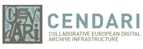
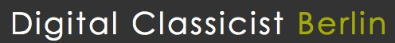

|
Welcome
The mission of DARIAH is to enhance and support digitally-enabled research across the humanities and arts. DARIAH aims to develop and maintain an infrastructure in support of ICT-based research practices.
DARIAH is working with communities of practice to:
- Explore and apply ICT-based methods and tools to enable new research questions to be asked and old questions to be posed in new ways
- Improve research opportunities and outcomes through linking distributed digital source materials of many kinds
- Exchange knowledge, expertise, methodologies and practices across domains and disciplines
|
|
Latest News
 CENDARI is a research collaboration aimed at integrating digital archives and resources for research on medieval and modern European history. The project brings technical experts together with leading historians and existing infrastructures (archives, libraries and other digital projects) within a research programme that is informed by cutting-edge technical development and driven by active reflection on the impact of the digital age on scholarly practice. This is a 4-year, European Commission-funded project led by Trinity College Dublin, in partnership with 14 institutions across 7 countries, to facilitate access to archives and resources in Europe for the benefit of scholars everywhere. CENDARI is also running a short questionnaire about primary resources, interesting collections and valuable finding aids to help shape the future of technical support for historic research. Please take a few minutes to complete their questionnaire.
|
 logo") Unit: Faculty for Cultural Studies (Institute of Indology and Tibetology) Start Date: 1 October 2012 Application Deadline: 31 August 2012 Salary: TV-L E 13 payscale (between 3,187 and 4,599 euros per month depending on experience) Term of appointment: until 31 December 2015, with the possibility of renewal
Part‐time employment is possible in principle.
 We invite submissions on research which employ digital methods, resources or technologies in an innovative way in order to enable increased understanding of the ancient world at large. Abstracts, either in English or in German, of 300-500 words max. (bibliographic references excluded) should be uploaded by midnight MET on September 14, 2012 using the special submission form.
Wednesday, 15 August 2012
 DIGHUMLAB is a newly established research infrastructure with the goal of supporting digital humanities and social science research by providing common virtual access to relevant digital and digitised resources for the humanities and the social sciences. We are looking for a computer scientist, software engineer, or a person with similar qualifications to work for a distributed common secretariat, headed by the project leader (based in Aarhus). Employment will be on a project basis for a 5-year period, and the workplace will be the University of Copenhagen, Centre for Language Technology. You will report to the DIGHUMLAB project leader but both you and your personal line manager will be located at the University of Copenhagen. Because of the distributed nature of DIGHUMLAB, you will be required to travel to Odense, Aarhus, and Aalborg and also to European partners and meetings. The closing date for applications is 23:59 CET, 9 September 2012.
DIGHUMLAB (Digital Humanities Laboratory, Denmark) launches on Monday 10 September 2012. We invite all members of DARIAH, attendance is free but online registration is required as seats are limited. Details: Monday 10 September 2012: 12.00 – 17.30 Speakers include: - Rector Lauritz B. Holm-Nielsen & Dean of Arts, Mette Thunø, Aarhus University
- Danish Minister for Science, Innovation and Higher Education, Morten Østergaard
- The DIGHUMLAB research theme leaders
- Sally Chambers, Secretary General, DARIAH-EU Coordination Office
- Steven Krauwer, CLARIN ERIC Executive Director
- Professor Patrik Svensson, HUMlab, Umeå University
- Professor Lorna Hughes, University of Wales
- Associate Professor Palmyre Pierroux, InterMedia, University of Oslo
- Professor Lily Díaz-Kommonen, Media Lab, Aalto University
|
|
|
|
|
|
Page 9 of 30 |
|
Information brochure

Download PDF 
|